专题4.3 角


教学目标 | 1. 结合实例理解角的静态与动态定义，掌握用符号、字母表示角的方法，建立几何直观认知。 2. 认识度、分、秒单位，能进行简单换算，学会用量角器准确度量角度，提升动手操作与运算能力。 3. 区分锐角、直角等角的类型，明确其大小关系，能比较角的大小，为后续几何学习奠基。 |
教学重难点 | 1.重点 （1）核心是角的概念理解与表示方法，需能清晰表述角的构成要素，并规范使用符号正确表示不同的角。 （2）关键是角的度量，包括量角器的规范使用和度、分、秒之间的单位换算，确保测量与计算准确。 2.难点 （1）难点在于度、分、秒的换算与角度加减，因涉及六十进制，学生易与十进制混淆，导致计算出错。 （2）难点在于不同情境下角的规范表示，尤其当图形中顶点处有多个角时，学生易混淆表示方式。 |

知识点01 角的概念
1.角的定义：
（1）定义一：有公共端点的两条射线组成的图形叫做角，这个公共端点是角的顶点，这两条射线是角的两条边．如图1所示，角的顶点是点O，边是射线OA、OB．

（2）定义二：一条射线绕着它的端点旋转而形成的图形，射线旋转时经过的平面部分是角的内部．如图2所示，射线OA绕它的端点O旋转到OB的位置时，形成的图形叫做角，起始位置OA是角的始边，终止位置OB是角的终边．
注意：（1）两条射线有公共端点，即角的顶点；角的边是射线；角的大小与角的两边的长短无关．
（2）平角与周角：如图1所示射线OA绕点O旋转，当终止位置OB和起始位置OA成一条直线时，所形成的角叫做平角，如图2所示继续旋转，OB和OA重合时，所形成的角叫做周角．

2.角的表示法：角的几何符号用“∠”表示，角的表示法通常有以下四种：

注意：用数字或小写希腊字母表示角时，要在靠近角的顶点处加上弧线，且注上阿拉伯数字或小写希腊字母．
3.角的画法
（1）用三角板可以画出30°、45°、60°、90°等特殊角．
（2）用量角器可以画出任意给定度数的角．
（3）利用尺规作图可以画一个角等于已知角．
【即学即练1】
1．在下列四个图形中，能用 ，
， ，
， 三种方法表示同一个角的图形是（ ）
三种方法表示同一个角的图形是（ ）
A． B． C．
B． C． D．
D．
【答案】B
【分析】本题主要考查了角的概念．角可以用一个大写字母表示，也可以用三个大写字母表示．角还可以用一个希腊字母表示，或用阿拉伯数字表示．
【详解】解：能用，，三种方法表示同一个角的图形是选项B中的图，
选项A，C，D中的图都不能用，，三种方法表示同一个角的图形，
故选：B．
2．如图，用三个大写字母表示所标记的各角．

（1）可以表示为 ；
（2） 可以表示为 ；
可以表示为 ；
（3） 可以表示为 ．
可以表示为 ．
【答案】  （或
（或 ）
）  （或
（或 ） （或
） （或 ）
）
【分析】本题考查角的表示，根据角的表示方法直接求解即可得到答案，熟记角的表示方法是解决问题的关键．
【详解】解：（1）可以表示为或；
（2）可以表示为或；
（3）可以表示为或；
故答案为：（1）（或）；（2）（或）；（3）（或）．
知识点02 角度制及其换算
角的度量单位是度、分、秒，把一个周角平均分成360等份，每一份就是1°的角，1°的
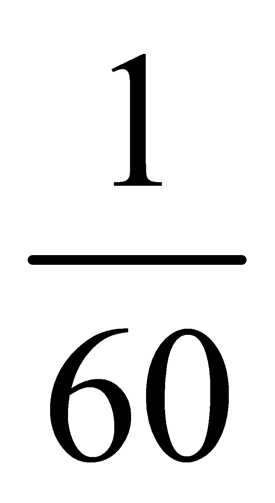
为1分，记作“1′”，1′的为1秒，记作“1″”．这种以度、分、秒为单位的角的度量制，叫做角度制．1周角＝360°，1平角＝180°，1°＝60′，1′＝60″．
注意：在进行有关度分秒的计算时，要按级进行，即分别按度、分、秒计算，不够减，不够除的要借位，从高一位借的单位要化为低位的单位后再进行运算，在相乘或相加时，当低位得数大于60时要向高一位进位．
【即学即练2】
1．
 ′ ″；
′ ″；
【答案】 1 9 36
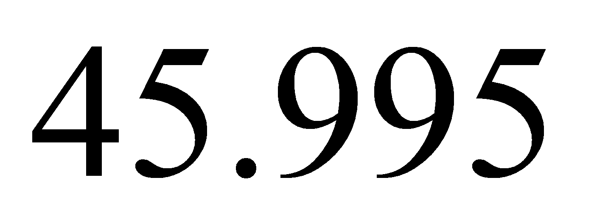
【分析】本题考查了度、分、秒之间的换算．度、分、秒之间是60进制，将高级单位化为低级单位时，乘以60，反之，将低级单位转化为高级单位时除以60．
【详解】解：①∵
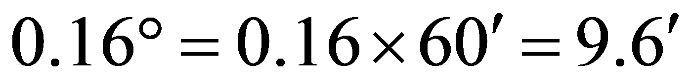
， ，
，∴ ；
；
②∵
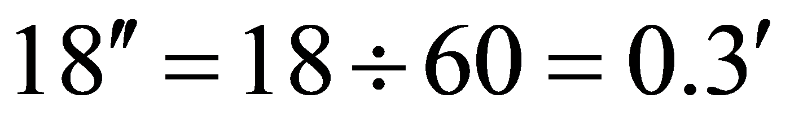
， ，
，∴ ；
；
故答案为：1，9，36；．
知识点03 钟表上有关夹角问题
钟表中共有12个大格，把周角12等分、每个大格对应30°的角，分针1分钟转6°，时针每小时转30°，时针1分钟转0.5°，利用这些关系，可帮助我们解决钟表中角度的计算问题．
【即学即练3】
1．小明每天下午 放学，此时钟面上时针和分针的夹角是 ．
放学，此时钟面上时针和分针的夹角是 ．

【答案】 /40度
/40度
【分析】根据每2个数字之间相隔30度和时针1分钟走0.5度可得夹角度数．考查钟面角的计算；用到的知识点为：钟面上每2个数字之间相隔30度；时针1分钟走0.5度．
【详解】解：时针20分所走的度数为 ，
，
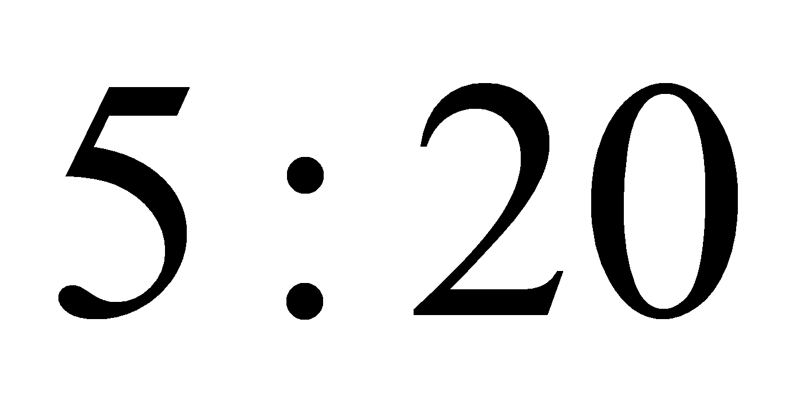
时，分针指着4，4与5之间的夹角为 ，
，
答：此时钟面上时针和分针的夹角是 ．
．
故答案为：．
知识点04 方位角
在航行和测绘等工作中，经常要用到表示方向的角．例如，图中射线OA的方向是北偏东60°；射线OB的方向是南偏西30°．这里的“北偏东60°”和“南偏西30°”表示方向的角，就叫做方位角．
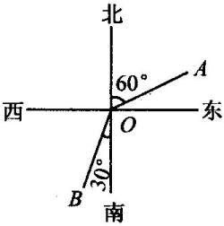
注意：（1）正东，正西，正南，正北4个方向不需要用角度来表示．
（2）方位角必须以正北和正南方向作为“基准”，“北偏东60°”一般不说成“东偏北30°” ．
（3）在同一问题中观察点可能不止一个，在不同的观测点都要画出表示方向的“十字线”，确定其观察点的正东、正西、正南、正北的方向．
（4）图中的点O是观测点，所有方向线(射线)都必须以O为端点．
【即学即练4】
1．如图是依依家到学校的行走路线图．

(1)小公园在依依家的 偏 米处．
(2)小公园在银行的 偏 米处．
(3)学校西偏南 ，距离
，距离 处是超市，请用★标出超市的位置．（
处是超市，请用★标出超市的位置．（
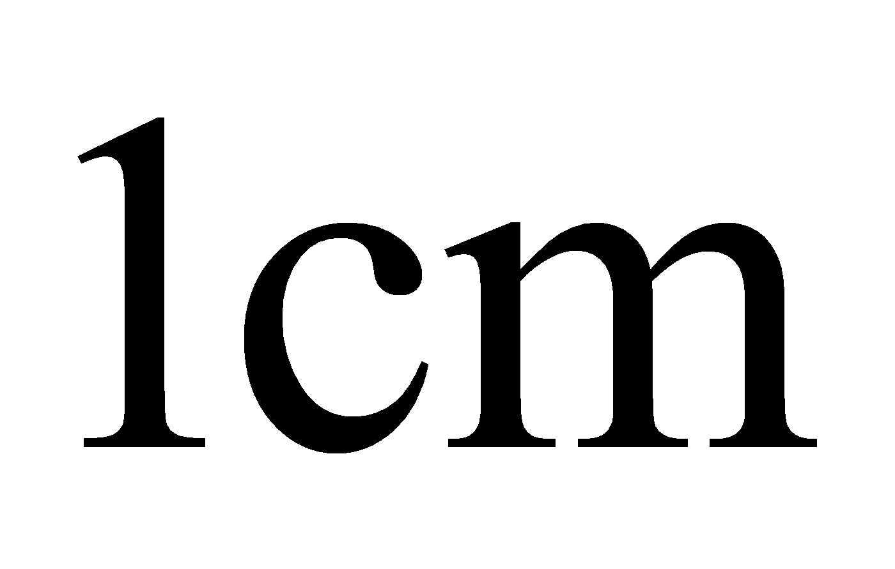
表示 ）
）【答案】(1)北；西20；距离80．
(2)南；西30；距离100
(3)见解析
【分析】本题主要考查了方位角的表示，解题的关键是熟练掌握方位角的定义．
（1）根据方位角的定义进行解答即可；
（2）根据方位角的定义进行解答即可；
（3）根据学校西偏南，距离处是超市，进行解答即可．
【详解】（1）解：小公园在依依家的北偏西距离80米处．
故答案为：北；西20；80．
（2）解：∵银行在小公园的北偏东距离100米处；
∴小公园在银行的南偏西距离100米处．
故答案为：南；西30；距离100．
（3）解：如图所示：
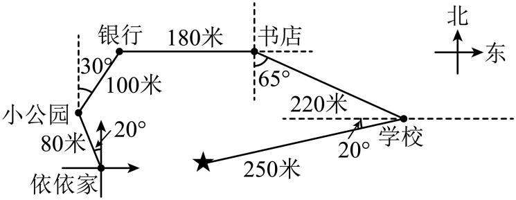
知识点05 角平分线
从一个角的顶点出发，把这个角分成相等的两个角的射线，叫做这个角的平分线．如图所示，OC是∠AOB的角平分线，∠AOB＝2∠AOC＝2∠BOC，∠AOC＝∠BOC = ∠AOB．
∠AOB．

注意：由角平分线的概念产生的合情推理其思维框架与线段中点的思维框架一样．
【即学即练5】
1．如图，已知 是内部任意的一条射线，
是内部任意的一条射线， 、
、 分别是
分别是 ，的平分线．
，的平分线．

(1)若 ，求
，求 的度数；
的度数；
(2)若 ，则
，则 ；若
；若 ，则 ．
，则 ．
【答案】(1)
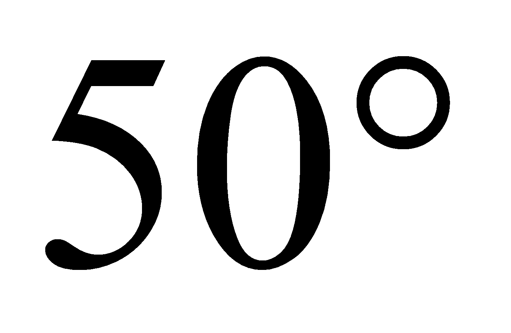
(2)
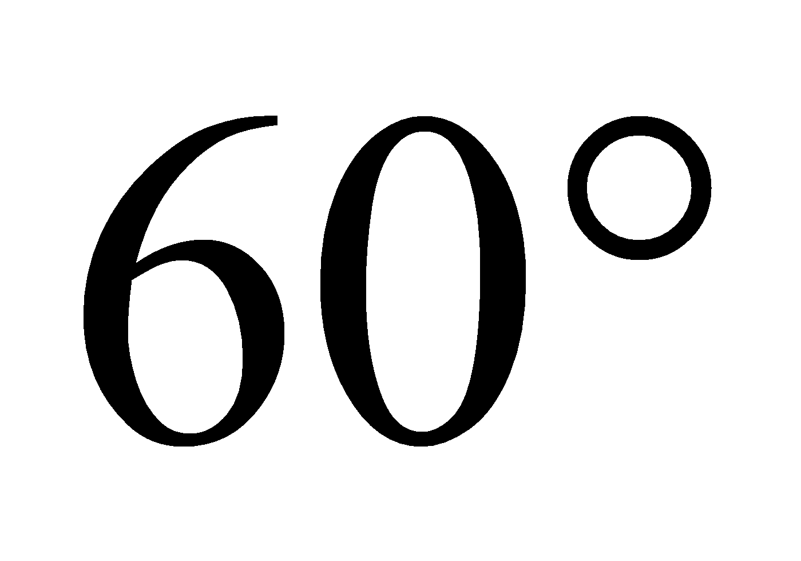
，
【分析】本题主要考查角平分线的定义，角的和差计算，熟练掌握角平分线的定义是解题的关键．
（1）根据角平分线的定义可知 ，
，
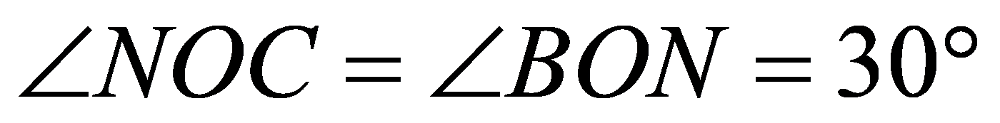
，再根据 计算，即得答案；
计算，即得答案；（2）根据角平分线定义可知
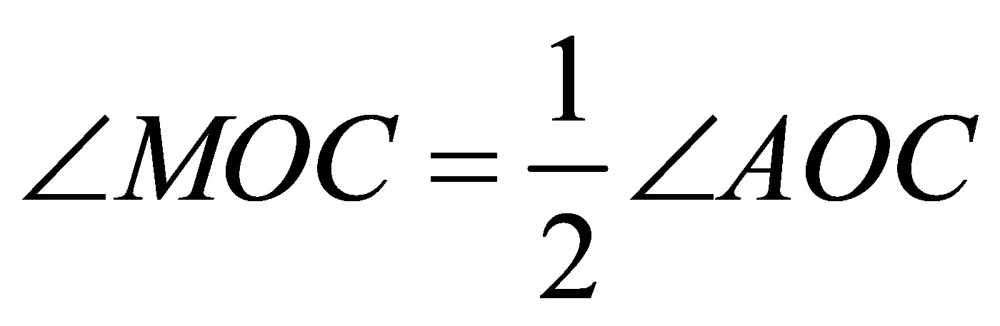
， ，，再根据计算，即得答案．
，，再根据计算，即得答案．【详解】（1）解：
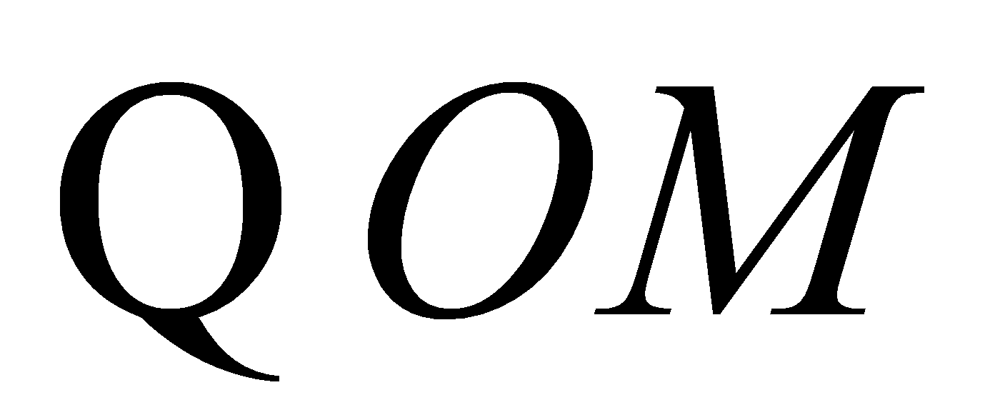
、分别是，的平分线，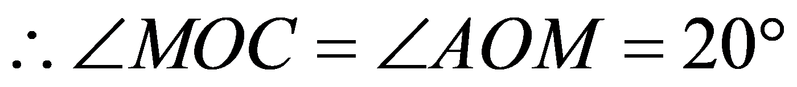
，，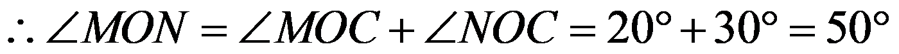
；（2）解：、分别是，的平分线，
 ，，
，，
 ，
，
 ，
，
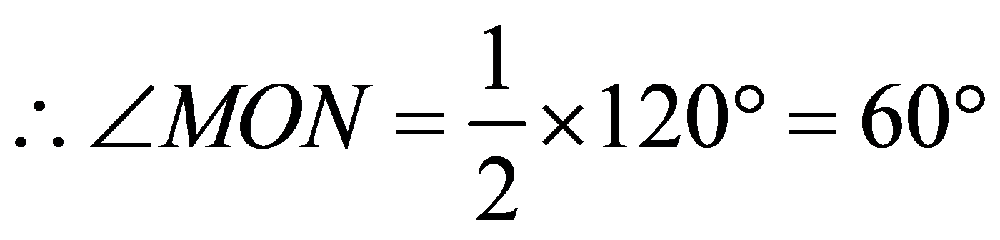
．同理： ，
，
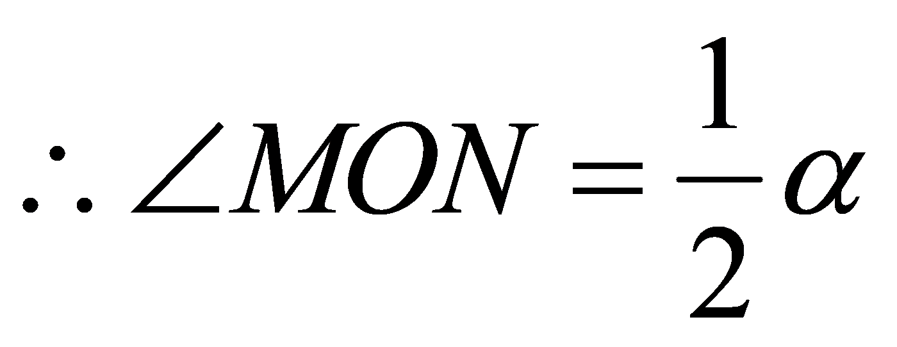
．知识点06 角的运算
如图所示，∠AOB是∠1与∠2的和，记作：∠AOB＝∠1+∠2；∠1是∠AOB与∠2的差，记作：∠1＝∠AOB-∠2．

注意：(1)用量角器量角和画角的一般步骤：①对中(角的顶点与量角器的中心对齐)；②重合(一边与刻度尺上的零度线重合)；③读数(读出另一边所在线的度数)．
(2) 利用三角板除了可以做出30°、45°、60°、90°外，根据角的和、差关系，还可以画出15°，75°，105°，120°，135°，150°，165°的角．
【即学即练6】
1．如图，已知是内部的一条射线，图中有三个角：，和，当其中一个角是另一个角的两倍时，称射线为的“巧分线”．如果 ，
， 是
是 的“巧分线”，则
的“巧分线”，则 的度数为 ．
的度数为 ．
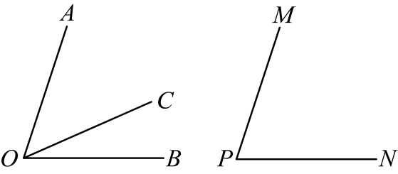
【答案】 或
或 或
或
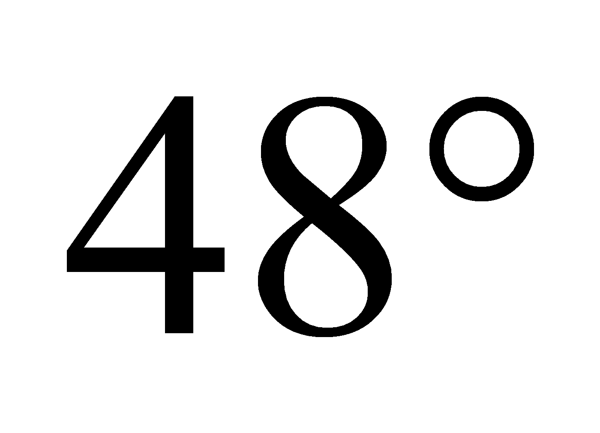
【分析】本题考查了角的定义和巧分线定义，正确理解“巧分线”的定义是解题的关键．
分3种情况，根据巧分线定义即可求解．
【详解】解：∵，是的“巧分线”，
则由“巧分线”的定义可知有三种情况符合题意：
① ，此时
，此时 ；
；
② ，此时
，此时 ；
；
③ ，此时
，此时 ；
；
∴的度数为或或．
故答案为：或或．
知识点07 角的比较
角的大小比较与线段的大小比较相类似，方法有两种：
方法1：度量比较法．先用量角器量出角的度数，然后比较它们的大小．
方法2：叠合比较法．把其中的一个角移到另一个角上作比较．
如比较∠AOB和∠A′O′B′的大小： 如下图，由图（1）可得∠AOB＜∠A′O′B′；由图(2)可得∠AOB＝∠A′O′B′；由图(3)可得∠AOB＞∠A′O′B′．
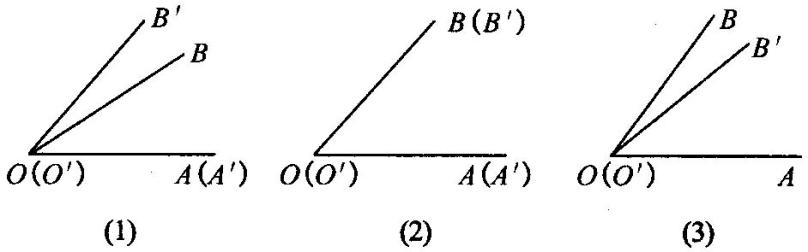
【即学即练7】
1．已知
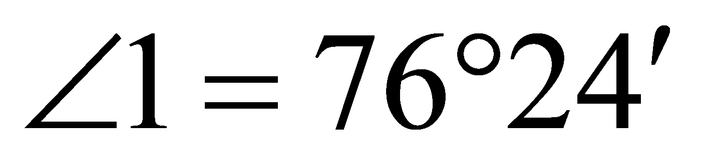
，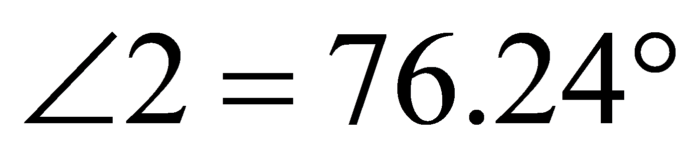
，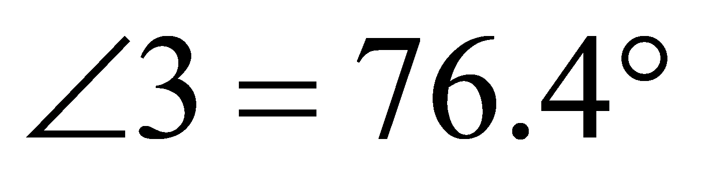
，下列说法正确的是（ ）A． B．
B． C．
C． D．
D．
【答案】B
【知识点】角的度数大小比较、角的单位与角度制
【分析】本题考查了度分秒之间的换算，属于基础题，注意两者之间的进位关系．将各角的单位统一，继而可得出答案．
【详解】解：，
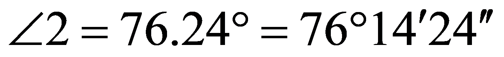
，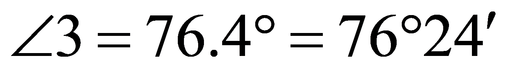
，∴
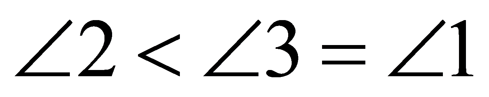
，故选B．

题型01 角的概念和表示
【典例1】（24-25七年级上·全国·课后作业）下列说法正确的是（ ）
A．角是由一条线段绕着它的一个端点旋转而形成的图形
B．角的大小和角的开口大小无关
C．由两条具有公共端点的射线组成的图形叫作角
D．角的两边越长，角就越大
【答案】C
【分析】本题考查了角的相关概念，根据角的相关定义逐项分析即可得解，熟练掌握角的相关定义是解此题的关键．
【详解】解：A、角是由一条射线绕着它的一个端点旋转而形成的图形，故原说法错误，不符合题意；
B、角的大小和角的开口大小有关，故原说法错误，不符合题意；
C、由两条具有公共端点的射线组成的图形叫作角，故原说法正确，符合题意；
D、角的大小与两边的长短没有关系，故原说法错误，不符合题意；
故选：C．
【变式1】（25-26七年级上·全国·课后作业）下列语句中，不正确的个数是（ ）
①由两条射线组成的图形叫做角；②角可以看作由一条射线绕着其端点从一个位置旋转到另一个位置所形成的图形；③大于 的角是钝角；④钝角的一半是锐角．
的角是钝角；④钝角的一半是锐角．
A．1 B．2 C．3 D．4
【答案】B
【分析】根据角的概念以及分类来判断即可．
【详解】解：①角是由公共端点的两条射线组成的图形，故①错误；
②角是由一条射线绕端点旋转形成的图形，故②正确；
③大于
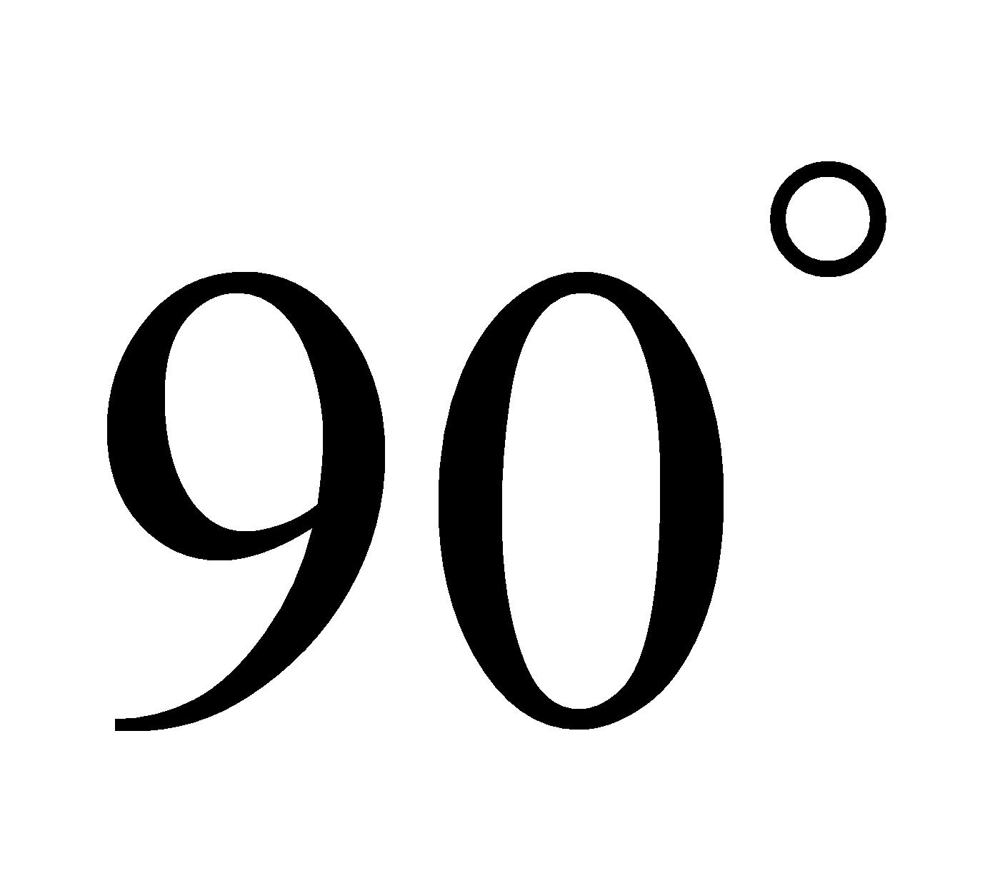
且小于 的角是钝角，故③错误；
的角是钝角，故③错误；④大于且小于的角是钝角，设钝角为 ，则
，则
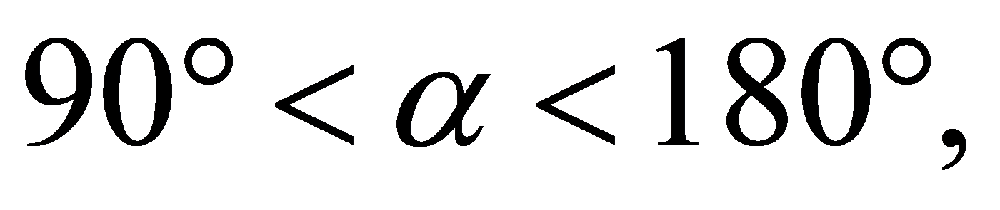
则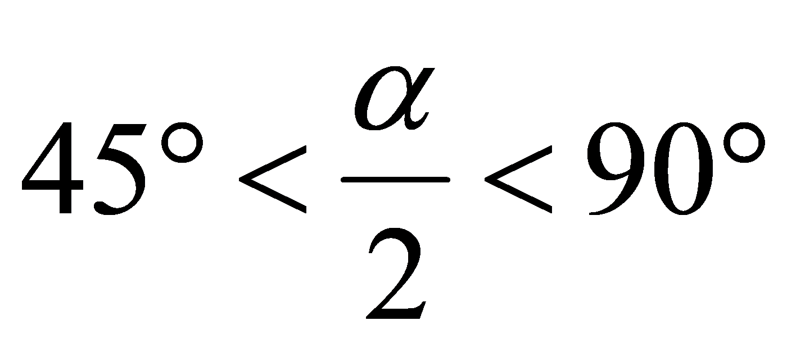
，则钝角的一半是锐角，故④正确；故不正确的个数是2个．
故选：B．
【点睛】本题考查了角的概念以及角的分类，解决问题的关键是注意角是由公共端点的两条射线组成的图形以及角的分类．
【变式2】（24-25七年级上·全国·课后作业）图中能用 三种方法表示同一个角的是（ ）
三种方法表示同一个角的是（ ）
A．B． C．D．
C．D．
【答案】C
【分析】本题考查了角的概念和角的表示方法的理解和掌握．角的表示方法有三种：（1）用三个字母及符号“
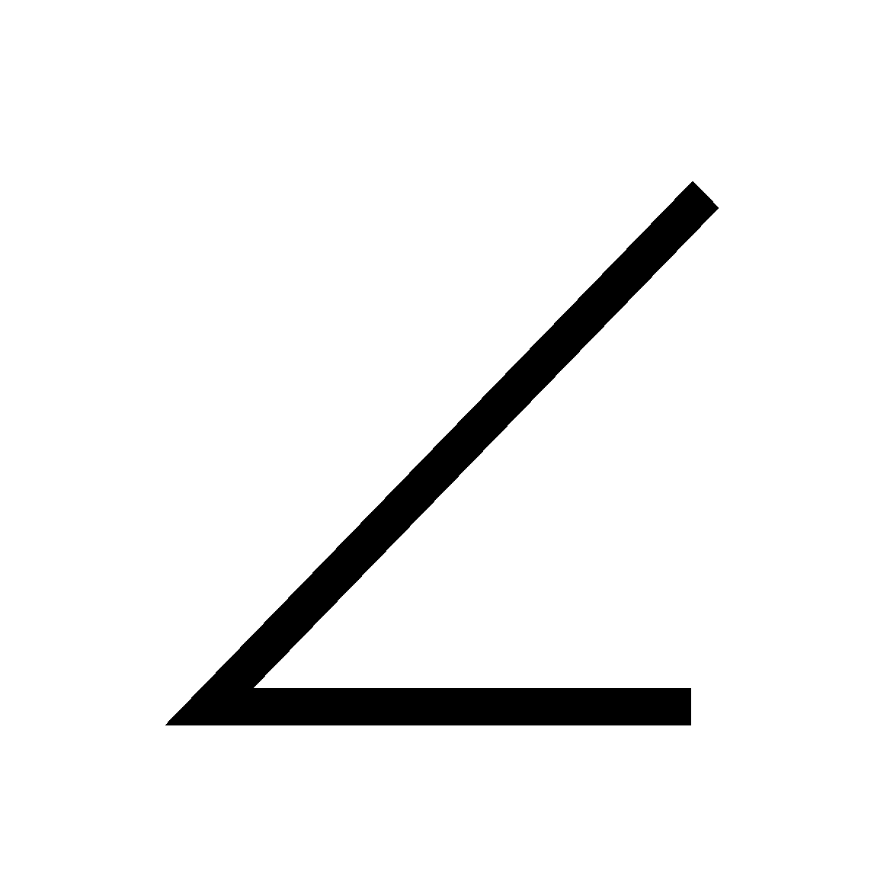
”来表示．中间的字母表示顶点，其它两个字母分别表示角的两边上的点．（2）用一个数字表示一个角．（3）用一个字母表示一个角．具体用哪种方法，要根据角的情况进行具体分析，总之表示要明确，不能使人产生误解．【详解】解：在选项A、B、D中，以点C为顶点的角不只有一个，如果用 表示，容易使人产生歧义，无法让人明确到底表示哪个角；
表示，容易使人产生歧义，无法让人明确到底表示哪个角；
只有选项C能用 ，
，
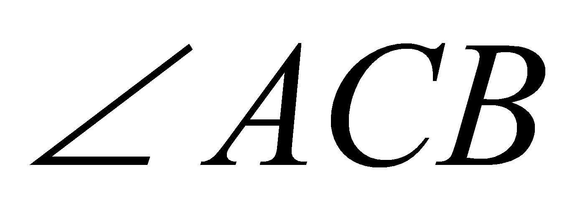
，三种方法表示同一个角，不会使人产生歧义．故选：C．
【变式3】（24-25七年级上·甘肃嘉峪关·期末）下列四个图中，能用， ，
， 三种方法表示同一个角的是（ ）
三种方法表示同一个角的是（ ）
A． B．
B． C．
C． D．
D．
【答案】B
【分析】本题考查了角的表示方法，根据角的表示方法并结合图形，逐项分析即可得解，熟练掌握角的表示方法是解此题的关键．
【详解】解：A、和表示同一个角，表示不同的角，故不符合题意；
B、，，三种方法表示的都是同一个角，故符合题意；
C、和表示同一个角，表示不同的角，故不符合题意；
D、和表示不同的角，故不符合题意；
故选：B．
题型02 角的单位与角度制
【典例2】（23-24七年级上·天津·期末）

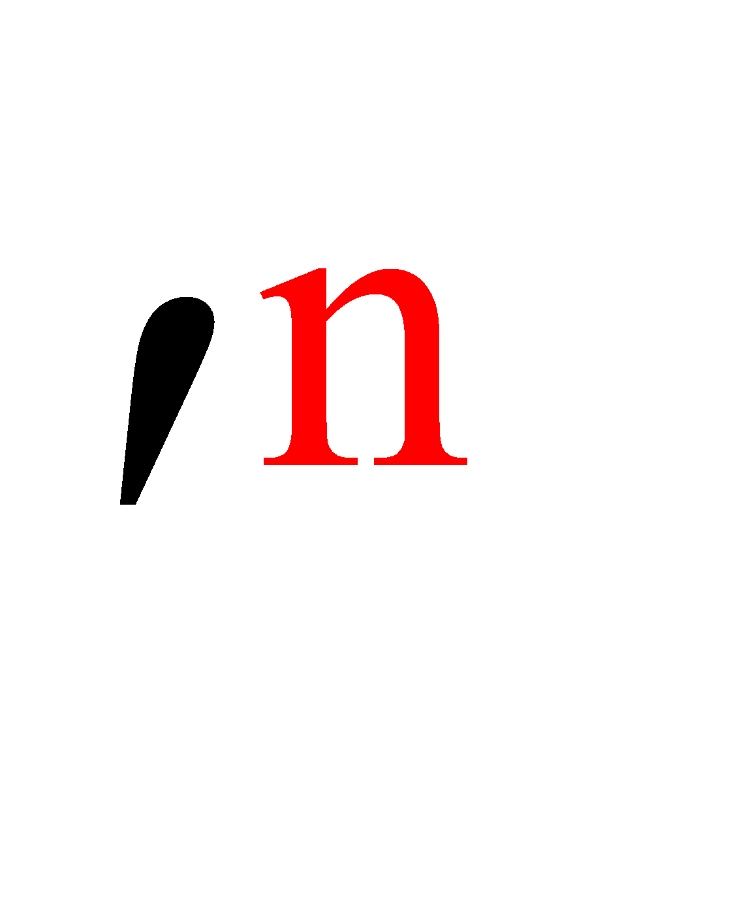
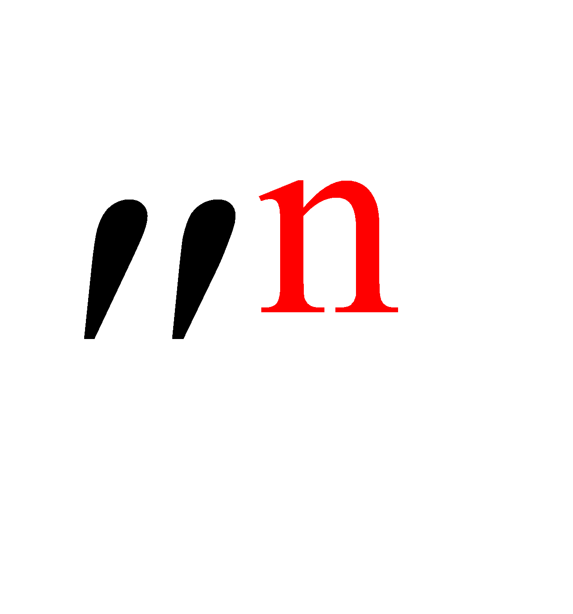
；
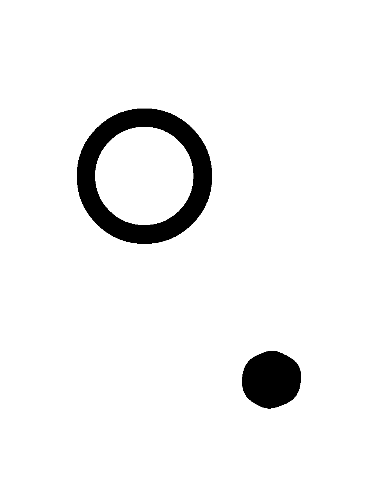
【答案】 35 9 0 12.26
【分析】根据度分秒的进制，根据 ，
， 进行计算即可解答．
进行计算即可解答．
【详解】解：
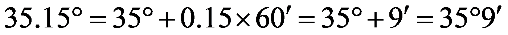
， ，
，
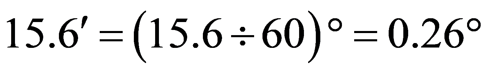
， ，
，
故答案为：35，9，0，12.26．
【变式1】（24-25七年级上·全国·课后作业）（1）

 ；
；
（2）
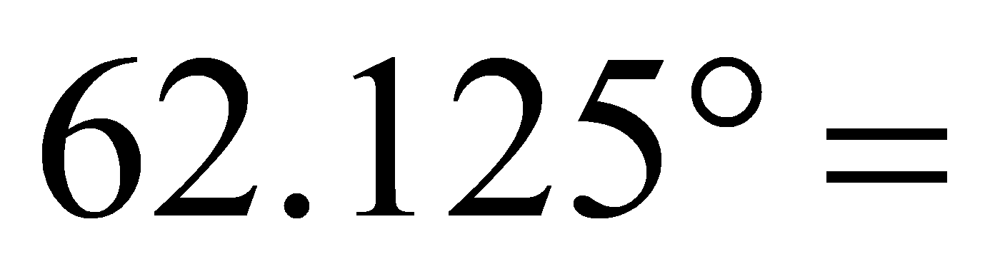
．【答案】 34 22 12 62 7 30
【分析】本题考查了度分秒的换算，熟练掌握 的换算是解题的关键．
的换算是解题的关键．
根据度分秒的转换规律求解即可．
【详解】（1）
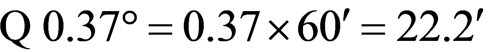
，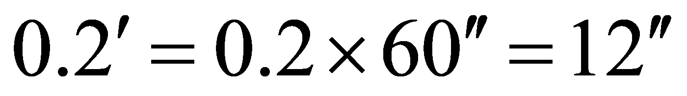
，
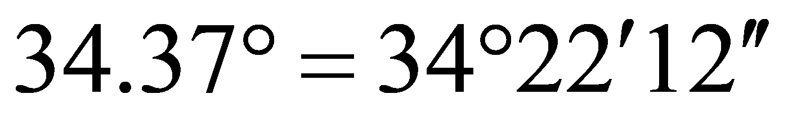
．故答案为34；22；12．
（2）
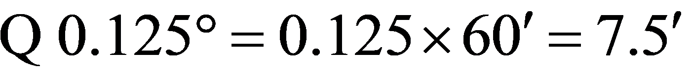
，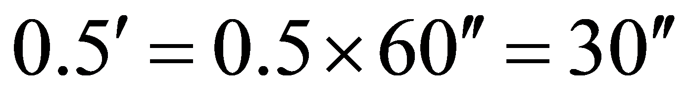
，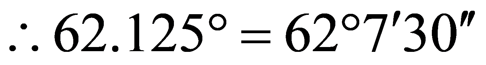
．故答案为：62；7；30．
【变式2】（25-26七年级上·全国·课后作业）单位换算：
（1） ；
；
（2）
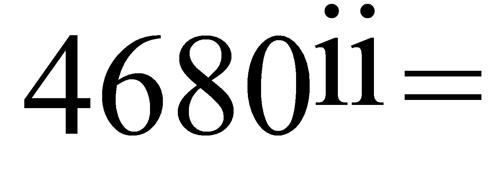
；（3）
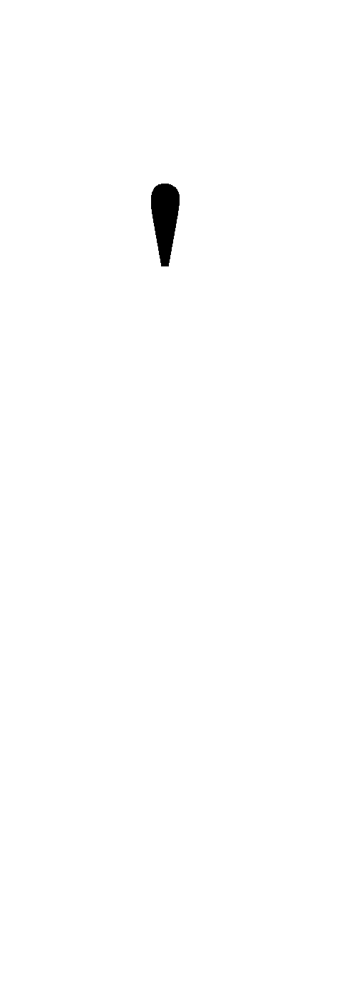
；（4） ．
．
【答案】 

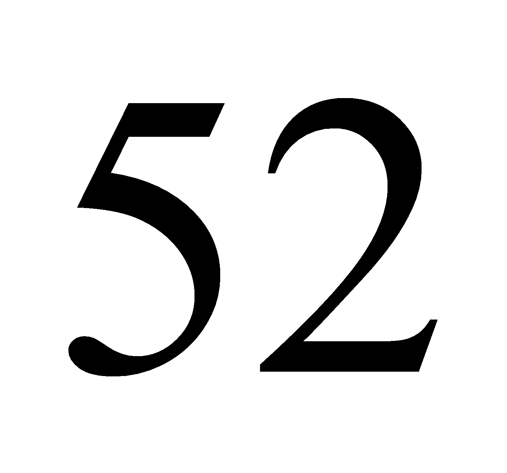


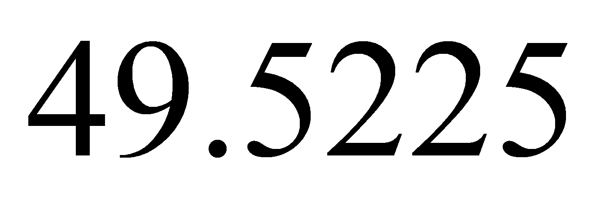
【分析】本题考查了度、分、秒的换算，熟练掌握度、分、秒的进率及换算方法是解题的关键．
（1）根据
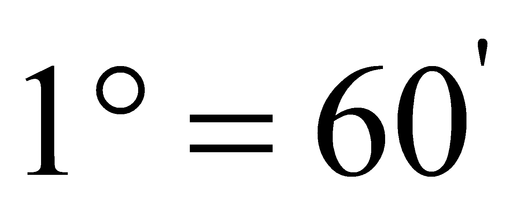
，用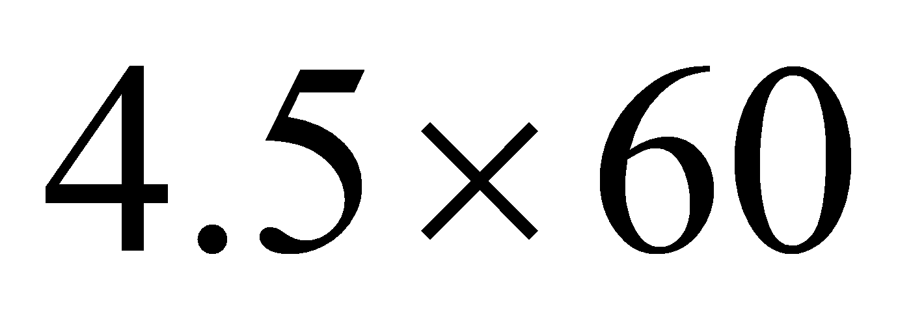
换算即可 ；（2）根据，
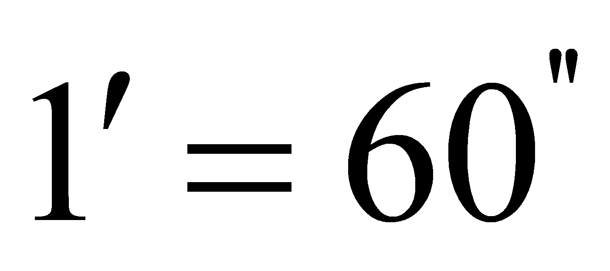
，用逆向换算即可 ；（3）根据，，先将换算成，再将换算成，即可得解；
（4）根据，，先将换算成，再将换算成，即可得解．
【详解】解：（1）；
故答案为：；
（2）；
故答案为：；
（3），，
；
故答案为：；；；
（4），
，
，
．
故答案为：．
【变式3】（25-26七年级上·全国·课后作业）计算（用度、分、秒表示）：
（1） ．
．
（2） ．
．
（3） ．
．
（4） ．
【答案】
【分析】（1）根据度分秒的加法，相同单位相加，满60向上一单位进1，可得答案；
（2）根据度分秒的乘法，从小单位乘，满60向上一单位进1，可得答案；
（3）根据度分秒的除法，从大单位算起，余数化成下单位再除，可得答案；
（4）根据度分秒的乘法，从小单位乘，满60向上一单位进1，再算减法，可得答案．
【详解】解：（1）原式＝
（2）原式
（3）原式
（4）原式＝
故答案为：① ② ③ ④．
题型03 钟面角
【典例3】（24-25七年级上·甘肃平凉·期末）2时20分时，钟面上时针与分针所成的角是 ．
【答案】
【分析】本题考查了钟面角，由时针每小时转动 ，时针每分钟转动
，时针每分钟转动 进行求解即可．
进行求解即可．
【详解】解：因为时针每小时转动，时针每分钟转动，
所以分针在2时20分时与 时的刻度线夹角为，
时的刻度线夹角为，
时针在2时20分时与时的刻度线夹角为，
所以2时20分时，钟面上时针与分针所成的角：
；
故答案为：．
【变式1】（24-25七年级上·北京西城·开学考试）在9时40分这一刻，时针和分针的夹角为 度．
【答案】50
【分析】本题考查时针与分针的夹角问题，掌握知识点是解题的关键．
先求出时针每小时走30度每分钟走度，分针每小时走360度每分钟走6度，继而得到9点40时分针与9点的夹角是30度，时针与9点的夹角是（度），则（度），即可解答．
【详解】解：∵（度），一格30度，时针每小时走30度每分钟走度，分针每小时走360度每分钟走6度，
∴9点40时分针与9点的夹角是30度，时针与9点的夹角是（度），
∴（度）．
故答案为：50．
【变式2】（24-25六年级下·全国·单元测试）如图，在地面上有一个钟，钟面的12个粗线段刻度是整点时针（短针）所指的位置，根据图中时针与分针（长针）所指的位置，该钟面所显示的时刻是 时 分．

【答案】 9 12
【分析】本题主要考查了钟表时间的推理，解题的关键是掌握钟表时针和分针的特征．
根据钟表时针和分针的特征进行合理的推理即可．
【详解】解：根据时针和分针所指刻度得，
时针走一个大格是60分钟，走一个小格是（分钟），
此时，分针从12点的刻度走了12个小格，
∴分针刚走过的刻度为2，
∴现在的时刻是9时12分，
故答案为：9，12．
【变式3】（24-25七年级上·陕西咸阳·阶段练习）每天上午“阳光大课间”都如约而至，此时时针与分针所夹的角为 ．
【答案】
【分析】本题考查了钟面角的有关知识，解题关键是得出钟表上从1到12一共有12格，每个大格．根据时针一分钟旋转，得到从9点到，经过了35分钟，时针旋转了，分针在7上，进而求解即可．
【详解】解：∵钟表上从1到12一共有12格，每个大格，
∴时针一分钟旋转
∴从9点到，经过了35分钟，在这期间时针旋转了，分针在7上，
∴分针与时针的夹角是．
故答案为：．
题型04 与方位角有关的计算题
【典例4】（24-25七年级上·全国·课后作业）如图， 方向是北偏东 ，
方向是北偏东 ， ．
．
【答案】  /60度
/60度  /105度
/105度
【分析】本题考查方向角及平角的概念，熟练掌握方向角的概念及平角为 是解题的关键．
是解题的关键．
根据图中所给角即方向的概念可得出方向是北偏东 ，利用平角为求即可．
，利用平角为求即可．
【详解】解：由图知，与正东方向夹角为，
所以方向是北偏东；
又，所以．
故答案为：； ．
．
【变式1】（24-25七年级上·贵州黔东南·阶段练习）如图，的方向是北偏东， 的方向是北偏西
的方向是北偏西 ．若
．若 ，则
，则 的方向是 ．
的方向是 ．
【答案】南偏东
【分析】本题考查了角的计算，方向角，利用图形求得 的大小即可得出结论．
的大小即可得出结论．
【详解】解：设表示南北的直线为 ，如图，
，如图，
由题意得：，，
．
，
．
．
，
的方向为：南偏东．
故答案为：南偏东．
【变式2】（24-25七年级下·广东广州·期末）如图，早上李老师开车从家出发去学校，以60千米/小时的速度沿南偏东方向行驶20分钟到达学校．下班后李老师沿同一路线回家，则李老师行驶的方向是 ，路程是 千米．
【答案】 北偏西 
【分析】本题考查了方向角，熟练掌握方向角的定义是解题的关键．根据方向角的定义即可得出答案．
【详解】解：根据题意，可知李老师行驶的方向是北偏西，路程是千米
故答案为：北偏西，
【变式3】（24-25七年级上·福建福州·期末）如图，某海域有三个小岛，在小岛 处观测到小岛
处观测到小岛 在它北偏东
在它北偏东 的方向上，观测到小岛B在它南偏东的方向上，则的度数大小是 ．
的方向上，观测到小岛B在它南偏东的方向上，则的度数大小是 ．
【答案】 /80度
/80度
【分析】本题考查了方位角及角的计算，根据方位角的描述和平角的定义求解即可．
【详解】解：由题意得，，
故答案为： ．
．
题型05 角的比较
【典例5】（24-25七年级上·安徽宿州·阶段练习）比较大小：
 ．（填“>”、“<”或“=”）
．（填“>”、“<”或“=”）
【答案】>
【分析】本题考查的度分秒的换算以及角的大小比较，解题的关键是将角的度数换算成度分秒的形式． 将角的度数换算成度分秒的形式，再进行比较即可得出结论．
【详解】解：依题意，，
∴，
∴．
故答案为： ．
．
【变式1】（24-25七年级上·浙江台州·期末）若， ，则
，则
 ．（填“”“
．（填“”“ ”或“
”或“ ”）
”）
【答案】
【分析】本题考查了角的大小比较，度分秒的换算，准确熟练地进行计算是解题的关键．
根据度分秒的进制进行计算比较，即可解答．
【详解】解：∵，
∴，
∴，
∵，
∴，
故答案为：．
【变式2】（24-25七年级上·陕西西安·阶段练习）若 ，，则
，，则
 ．（填“>”“<”或“=”）
．（填“>”“<”或“=”）
【答案】>
【分析】本题考查了角的大小比较和度分秒的换算，关键是能正确进行度分秒之间的换算．
先换算，再和的度数比较即可．
【详解】解：∵ ，，
，，
∴，
故答案为：．
【变式3】（24-25七年级上·江苏宿迁·期末）若 ，，则
，，则  填“”“”或“”
填“”“”或“”
【答案】
【分析】本题主要考查角的大小比较及度分秒的换算，先统一单位，再进行比较，即可得出答案．
【详解】解：，
，
，
故答案为：
题型06 三角板中角度计算问题
【典例6】（24-25七年级上·福建莆田·期末）如图，将一副三角尺的两个锐角（ 角和角）的顶点叠放在一起，没有重叠的部分分别记作和
角和角）的顶点叠放在一起，没有重叠的部分分别记作和 ，若
，若 ，则的度数为 ．
，则的度数为 ．

【答案】/38度
【分析】本题考查了三角板中的角度计算，熟练掌握角的运算是解题关键．如图（见解析），根据题意可得，，则可得，代入计算即可得．
【详解】解：如图，由题意得：，，

∵，
∴，
∴，
故答案为： ．
．
【变式1】（24-25七年级上·吉林·期末）如图，将一个直角三角板的角的顶点与另一个直角三角板的直角顶点重合若，则 ．
．
【答案】
【分析】本题考查了三角板中的角度计算，熟练掌握度分秒的进制是解题的关键．
根据，，可得的度数，即可求解．
【详解】解：∵，，
∴，
∵，
∴．
故答案为：
【变式2】（24-25七年级上·湖北襄阳·期末）如图，将一个三角板角的顶点与另一个三角板的直角顶点重合，若 平分
平分 ，则
，则 的度数是 ．
的度数是 ．
【答案】
【分析】本题考查角了角的和差和角平分线的相关计算．根据，可若平分计算出的度数，再由，即可得出答案．
【详解】解：∵平分，，
∴
∵，
∴，
故答案为：
【变式3】（24-25七年级上·河南郑州·期末）一副三角板按如图方式摆放，点 在同一条直线上，
在同一条直线上， ．现将三角板
．现将三角板 绕点
绕点 逆时针旋转一周，当
逆时针旋转一周，当 所在直线恰好平分
所在直线恰好平分 时，三角板转过的角度为 ．
时，三角板转过的角度为 ．

【答案】或
【分析】本题考查了三角板中角度计算问题以及角平分线的有关计算，正确掌握相关性质内容是解题的关键．先认真读题干，然后进行分类讨论，逐个情况作图，运用角之间的和差关系分别列式计算，即可作答．
【详解】解：∵，
∴ ，
，
∴ ，，
，，
如图所示：

∵平分 ，
，
∴
∴，
此时三角板转过的角度为；
当的延长线 平分，如图所示：
平分，如图所示：

∴
则
故 ，
，
此时三角板转过的角度为；
故答案为：或．
题型07 角平分线的有关计算
【典例7】（24-25七年级下·山东临沂·阶段练习）如图，点在直线 上，
上， ．
．

(1)若 平分
平分 ，
， ，则
，则 ________．
________．
(2)若为锐角， ，请说明平分．
，请说明平分．
【答案】(1)
(2)见解析
【分析】本题考查了垂直的定义，角平分线的定义，角的和差，解题的关键是掌握相关知识．
（1）根据垂直的定义和 ，可得，再根据角平分线的定义求出，最后根据，即可求解；
，可得，再根据角平分线的定义求出，最后根据，即可求解；
（2）由垂直的定义可得：，由平角的定义可得 ，结合
，结合 ，即可证明．
，即可证明．
【详解】（1）解：
 ，
，
 ，
，
，
，
平分 ，
，
，
，
故答案为：；
（2）解：，
，
，
，
，
，
，
，
平分．
【变式1】（24-25七年级上·湖南长沙·期末）如图，是 的平分线，
的平分线， 是
是 的平分线，
的平分线， ．
．
(1)求 的度数是多少？
的度数是多少？
(2)如果 ，求的度数．
，求的度数．
【答案】(1)
(2)
【分析】本题考查的是角平分线的定义，熟知各角之间的和、差及倍数关系是解答此题的关键．
（1）根据角平分线的定义得出，，那么；
（2）先根据求出，然后求出，根据角平分线的定义即可得出结论．
【详解】（1）解：∵是的平分线，是的平分线，
∴，，
∴
，
∵，
∴，
∴ 的度数为：
的度数为： ；
；
（2）∵是的平分线，，
∴，
∵，
∴，
∵是的平分线，
∴，
∴的度数为：．
【变式2】（24-25七年级下·江西赣州·期末）已知是过点的一条射线，分别平分．

(1)当射线在的内部时
①如图①，若，则 _________；
_________；
②如图②，若，求 的度数（用含
的度数（用含 的式子表示）；
的式子表示）；
(2)当射线在的外部时，，请借助备用图探究的度数是________（直接写出答案）
【答案】(1)① ；②
；②
(2)或
【分析】本题考查了几何图形中角的计算，角平分线的定义，分情况确定射线的位置是解题的关键．
（1）①由，求角度即可；
②借助①的角的数量关系即可求得的度数；
（2）分情况讨论射线的位置，在（1）的基础上求的度数即可．
【详解】（1）解：①分别平分，
，
，
，
，
，
，
，
故答案为：；
②由①知，
，
，
即的度数为；
（2）解：射线在的外部分两种情况，
如图③，
分别平分，
，
，
，
，
，
，
，
如图④，
，
，
，
，
，
，
即的度数为或
故答案为：或
【变式3】（23-24七年级上·陕西渭南·期末）【问题背景】已知是 内部的一条射线，且．
内部的一条射线，且．

【问题再现】（1）如图1，若 ，
， 平分
平分 ，
， 平分．求
平分．求 的度数；
的度数；
【问题推广】（2）如图2， ，从点O出发在
，从点O出发在 内引射线OD，满足．若平分
内引射线OD，满足．若平分 ．求
．求 的度数；
的度数；
【拓展提升】（3）如图3，在的内部作射线，在的内部作射线 ．若；求
．若；求 和
和 的数量关系．
的数量关系．
【答案】（1）；（2）；（3）
【分析】（1）根据角的平分线，角的和差计算即可．
（2）根据角的平分线，角的和差计算即可．
（3）由，设，则，根据角的平分线，角的和差计算即可．
本题考查了角的和差计算，角的平分线，熟练掌握角的平分线是解题的关键．
【详解】（1）解：∵，，
．
又∵平分，平分，
．
，
；
（2）解：∵，，
．
故，
∴，
又∵平分，
．
．
（3）解：由，
设，则
∵，
∴．
∴．
∴，
∴，
∴．
题型08 角n等分线的有关计算
【典例8】在 的内部作射线
的内部作射线 ，射线把分成两个角，分别为
，射线把分成两个角，分别为 和
和 ，若
，若 或
或 ，则称射线为的三等分线．若
，则称射线为的三等分线．若 ，射线为的三等分线，则的度数为（ ）
，射线为的三等分线，则的度数为（ ）
A． B．
B． C．或 D．或
C．或 D．或
【答案】C
【知识点】角n等分线的有关计算
【分析】根据题意得出 或
或 ，再根据角之间的数量关系，得出
，再根据角之间的数量关系，得出 ，综合即可得出答案．
，综合即可得出答案．
【详解】解：∵，射线为的三等分线．
∴ 或，
或，
∴ ，
，
∴的度数为或．
故选：C．
【变式1】定义：从的顶点出发，在角的内部引一条射线，把分成 的两部分，射线叫做的三等分线．若在
的两部分，射线叫做的三等分线．若在 中，射线
中，射线 是的三等分线，射线是
是的三等分线，射线是 的三等分线，设
的三等分线，设 ，则用含x的代数式表示为 ．
，则用含x的代数式表示为 ．
【答案】或 或
或
【知识点】角n等分线的有关计算
【分析】本题考查角的计算．解题关键是做出图形，列方程计算．注意要分类讨论．
【详解】如图，
∵射线是的三等分线，
∴把分成的两部分，
∴ 或
或 ，
，
∵射线是的三等分线，
∴把分成的两部分，
∴ 或
或 ，
，
∵，
∴ 或
或 ，
，
当 时，
时， 或
或 ，
，
当 时，或
时，或 ，
，
故答案为：或或．

一、单选题
1．下列四个图形中，能用 三种方法表示同一个角的是（ ）
三种方法表示同一个角的是（ ）
A．B．C． D．
D．
【答案】B
【分析】本题考查了角的概念，准确识图，熟练掌握角的表示方法是解题的关键．结合各选项中的图形，根据角的表示方法即可得出答案．
【详解】解：A、图中的 ，可以用
，可以用 表示，不能用表示，故该选项不符合题意；
表示，不能用表示，故该选项不符合题意；
B、图中的，可以用表示，也能用表示，故该选项符合题意；
C、图中的，可以用表示，不能用表示，故该选项不符合题意；
D、图中的，可以用表示，不能用表示，故该选项不符合题意；
故选：B ．
2．下列各式中，正确的是（ ）
A． B．
B．
C． D．
D．
【答案】C
【分析】本题主要考查度分秒的换算，熟练掌握该知识点是解题的关键．
根据度分秒的换算，逐一计算判断即可．
【详解】解：A、∵ ，，，
，，，
∴ ，选项说法错误，不符合题意；
，选项说法错误，不符合题意；
B、 ，，选项说法错误，不符合题意；
，，选项说法错误，不符合题意；
C、，选项说法正确，符合题意；
D、，选项说法错误，不符合题意；
故选：C．
3．一架飞机从某机场向北偏东 方向飞行了
方向飞行了 千米，原路返回时要向（ ）方向飞行千米．
千米，原路返回时要向（ ）方向飞行千米．
A．南偏西 B．西偏南 C．东偏北 D．北偏东
【答案】B
【分析】本题考查了方向角，根据方向的相对性，原路返回的方向与去时的方向相反，即北偏东的相反方向为南偏西，但需注意角度的转换，北偏东的相反方向可转换为西偏南，掌握知识点的应用是解题的关键．
【详解】解：飞机从机场向北偏东方向飞行，返回时方向相反，北偏东的相反方向为南偏西，即西偏南，
因此，原路返回时应向西偏南方向飞行千米，
故选： ．
．
4．如图，直线 相交于点
相交于点 ，射线
，射线 平分
平分 ，
， 是直角．若
是直角．若 ，则
，则 的度数为（ ）
的度数为（ ）

A． B．
B． C．
C． D．
D．
【答案】C
【分析】本题主要考查了角平分线的定义，解决本题的关键在正确找出角的关系．根据角平分线的定义，得出，再根据题意，得出 ，然后再根据角的关系，计算即可得出的度数．
，然后再根据角的关系，计算即可得出的度数．
【详解】解：∵射线平分，，
∴，
∵是直角
∴，
∴．
故选：C．
5．如图，两个直角共顶点，下列结论：① ；②；③若
；②；③若 平分，则
平分，则 平分
平分 ；④
；④ 的平分线与的平分线是同一条射线．其中不正确的个数有（ ）．
的平分线与的平分线是同一条射线．其中不正确的个数有（ ）．
A．1 B．2 C．3 D．4
【答案】A
【分析】本题主要考查了角的计算，角平分线的定义，理解角平分线的定义，熟练掌握角的计算是解决问题的关键．
①依题意得 ，则
，则 ，由此可对该结论进行判断；
，由此可对该结论进行判断；
②假设，则，进而得 ，根据已知条件无法判定，由此可对该结论进行判断；
，根据已知条件无法判定，由此可对该结论进行判断；
③根据平分得，则，进而得，然后根据角平分线的定义可对该结论进行判断；
④设 平分，则，再根据得，则
平分，则，再根据得，则 平分，由此可对该结论进行判断；综上所述即可得出答案．
平分，由此可对该结论进行判断；综上所述即可得出答案．
【详解】解：①∵和都是直角，
∴，
∴，
∴，
故结论①正确；
②假设，
，
，
∴，
，
根据已知条件无法判定，
故结论②不正确，
③∵平分，，
，
又，
，
，
∴平分，
故结论③正确；
④设平分，如图所示：
，
，
，
 ，
，
∴平分，
即的平分线与的平分线是同一条射线，
故结论④正确，
故选：A．
二、填空题
6．比较大小：，则
 ．（填“
．（填“ ”“
”“ ”或“
”或“ ”）
”）
【答案】
【分析】本题考查了度分秒的换算以及大小比较，注意 ，
， ，先统一单位，再比较大小即可求解．
，先统一单位，再比较大小即可求解．
【详解】解：∵，
，
∴ ．
．
故答案为：．
7．如图，在灯塔处观测到轮船A位于北偏西52°的方向，同时轮船 在南偏东22°的方向，则的度数为 °．
在南偏东22°的方向，则的度数为 °．
【答案】150
【分析】本题考查了方位角的计算，解题的关键是明确各个角之间的关系．
通过分析方位角，，计算出的度数．
【详解】解：如图：
根据题意，得，
所以，
所以．
故答案为： ．
．
8．时间为6：50时，时钟上时针和分针所形成的锐角为 度．
【答案】
【分析】本题考查钟面角度问题，掌握相关知识是解决问题的关键．根据整时之间的夹角为 和时针旋转的速度是0.5度
和时针旋转的速度是0.5度 分钟求解可得．
分钟求解可得．
【详解】解：钟面上，整时之间的夹角为，旋转的速度是每分钟，
∴此时时钟上的分针与时针所形成的锐角是：
．
故答案为：．
9．如图，一副直角三角板的顶点重合在一起，若 ，则
，则 的度数为 ．
的度数为 ．

【答案】
【分析】本题考查了角的计算，掌握角的和差计算是解题的关键．
由题意可知，，则 ，
， ，即①，②，再根据，可得，代入②可得：
，即①，②，再根据，可得，代入②可得： ③，①
③，① ③可得：，即可得出
③可得：，即可得出 的度数，进而得出答案．
的度数，进而得出答案．
【详解】解： 一副三角板的顶点重合在一起，
一副三角板的顶点重合在一起，
 ．
．
，，
①，②，
，
 ，
，
 ③，
③，
①③，得，
 ，
，
．
故答案为：．
10．如图，点O为量角器中心，射线与射线 经过的刻度分别为
经过的刻度分别为 和
和 ，从点O引一条射线
，从点O引一条射线 ，使
，使 ，则
，则 的度数为 ．
的度数为 ．
【答案】 或
或
【分析】本题主要考查了角的计算，分情况讨论的方法是解答本题的关键．先求得，，再分射线在内部和射线在内部两种情况讨论，利用角的和与差求解即可．
【详解】解：由题意得，，
∴，
当射线在内部时，；
当射线在内部时，；
故答案为：或．
三、解答题
11．计算：
(1) ．
．
(2)．
(3) ．
．
(4)．
【答案】(1)
(2)
(3)
(4)
【分析】本题包含四个角的运算问题，需要根据度、分、秒的进制，按照先乘除后加减、有括号先算括号内的运算顺序进行计算．
【详解】（1）解：原式．
（2）解：原式．
（3）解：原式．
（4）解：原式．
【点睛】本题考查了度分秒的四则运算，掌握度、分、秒之间的进制关系，按照运算顺序进行计算是解题的关键．
12．如图所示，O点是学校所在的位置，A小区位于学校南偏东 ，B小区位于学校西北方向，在A小区和B小区之间有一条公路（射线）平分．
，B小区位于学校西北方向，在A小区和B小区之间有一条公路（射线）平分．
(1) 度； 度；
度； 度；
(2) 度；
度；
(3)公路上的车站D相对于学校O的方位是 ．
【答案】(1)15；45；
(2)75；
(3)北偏东 ．
．
【分析】本题考查了方位角的概念及角度计算，涉及角平分线的性质，解题的关键是理解"南偏东""西北方向"等方位角的含义，明确不同方向之间的角度关系，并结合角平分线计算角度．
（1）南偏东指从正南方向向东偏，正东与正南夹角为 ，故；西北方向即北偏西
，故；西北方向即北偏西 ，与正北方向的夹角为，故．
，与正北方向的夹角为，故．
（2）先求在南偏东，B在北偏西，两者夹角（劣角）为；因平分，故．
在北偏西，在B与A之间，，即从B向东偏；计算得：北偏西向东偏，最终方位为北偏东．
【详解】（1）解：对于南偏东指从正南方向向东偏转，正东与正南方向的夹角为，因此．
对于西北方向即北偏西，指从正北方向向西偏转，因此．
故答案为：．
（2）解：先求的度数：
A小区在南偏东，B小区在北偏西，南北方向夹角为 ，
，
因此．
因射线平分，故．
故答案为：．
（3）解：B小区在北偏西，射线在内部且，
即从B小区向东偏转．
计算相对于正北方向的偏转角度：从北偏西向东偏转，相当于从正北方向向东偏转，因此车站D相对于学校O的方位是北偏东．
故答案为：北偏东．
13．如图，将一副直角三角板的直角顶点 叠放在一起．
叠放在一起．

(1)若 ，则 ；
，则 ；
(2)若，则 ；
；
(3)若，求 的度数．
的度数．
【答案】(1)；
(2)；
(3) ．
．
【分析】本题主要考查了角的运算．
（1）根据 和，可以求出，再根据即可求出结果；
和，可以求出，再根据即可求出结果；
（2）根据和 ，即可求出，再根据，即可求出的度数；
，即可求出，再根据，即可求出的度数；
（3）设，，又因为，即可得到：，因为，即可得到，解方程求出 的值，即可得到的度数．
的值，即可得到的度数．
【详解】（1）解：由题意得，，
，
，
，
故答案为：；
（2）解：由题意得，，
，
，
，
故答案为：；
（3）解：，
设，，
由题意得，，
，
，
，
解得：，
．
14．已知，在内部作射线OC，OD平分 ，
， ．
．

(1)如图1，求的度数；
(2)如图2，在内部作射线OM，使，在外部作射线OE，使得 ，作OF平分
，作OF平分 ，当时，求
，当时，求 、
、 的度数．
的度数．
【答案】(1)
(2)，
【分析】本题考查了角的计算与角平分线的性质，解题的关键是利用角平分线的性质以及角之间的和差关系进行分析计算．
（1）利用角平分线的性质，将角进行转化，结合已知条件求出的度数；
（2）先根据已知条件求出的度数，再利用角之间的和差关系以及角平分线的性质求出和的度数．
【详解】（1）解：OD平分，

 ，
，
，
，
即；
（2）解：，
．
OD平分，
，
，
，
．
，
则，
，OF平分，
．
15．如图，钟表上显示的时间是 时
时 分．
分．
(1)时针与分针的夹角为  ．
．
(2)设时针与分针的交点为，时针为，分针为 ，过点引一条射线，且
，过点引一条射线，且 平分
平分 ，
， 平分．
平分．
①若在内部，且，则 ．
②若在外部，且 ，则的度数为多少？
，则的度数为多少？
【答案】(1)
(2)①；② 或
或
【分析】本题主要考查了钟表角度的计算和角平分线的定义，首先需要计算时针与分针的夹角，其次根据角平分线的定义，计算不同情况下的度数．
（1）根据时针每小时转过的角度计算即可得；
（2）①当射线在内部时，由平分可知，，由平分可知，，即可得 ；
；
②分为两种情况分析：
（i）如图2所示，当射线在的外部，且时，，根据角平分线的定义可得， ，，最后由即可得的度数；
（ii）如图3所示，当射线在的外部，且时，，根据角平分线的定义可得， ，，最后由 即可得的度数．
即可得的度数．
【详解】（1）时针每小时转过的角度为，
时针与分针的夹角为．
（2）①如图1所示，当射线在内部时
 平分，平分，
平分，平分，
 ，，
，，
；
②分两种情况：
（i）如图2所示，当射线在的外部，且时，
，，
，
平分，
，
平分，
，
；
（ii）如图3所示，当射线在的外部，且时，
，，
，
平分，
，
平分，
，
，
综上所述，的度数为或．
16．如图，点O在直线 上，从O点引一条射线，平分，．
上，从O点引一条射线，平分，．
(1)如图1，若 ，
， ，求；
，求；
(2)如图2，若为直角，求n的值；
(3)如图3，若 ，设
，设 （用含m的代数式表示的度数）．
（用含m的代数式表示的度数）．
【答案】(1)
(2)
(3)
【分析】本题主要考查了角的计算、角平分线的定义等知识点，弄清角之间的关系成为解题的关键．
（1）已知平分，可得的度数，因为，可得 的度数，再根据
的度数，再根据 即可解答；
即可解答；
（2）因为为直角，即，因为平分，所以，即可得n的值；
（3）已知平分，可得的度数，因为，可得的度数，再根据即可解答．
【详解】（1）解：∵平分，，
∴，
∴，
∵，
∴，
∴．
（2）解：∵为直角，
∴，
∵平分，
∴，
∴，即，
∴ ；
；
（3）解：∵平分，，
∴，
∴，
∵，
∴，
∴．
17．综合探究
如图1，把一副直角三角板的直角边放在直线l上，两个直角三角板分别在直线l的两侧，且，，．

(1)如图， ；
(2)如图，把三角板 绕点旋转，使
绕点旋转，使 刚好落在
刚好落在 的平分线上．此时，
的平分线上．此时， 是否平分？请说明理由；
是否平分？请说明理由；
(3)如图，把三角板绕点旋转，使得落在内部，
当时，则 ；
；
当时，则 ；
；
设， ，试猜想
，试猜想 与
与 的数量关系，并说明理由．
的数量关系，并说明理由．
【答案】(1)；
(2)是的平分线；
(3) ，
， ，，见解析．
，，见解析．
【分析】本题主要考查了角的和与差、角平分线的定义、三角板中角度的计算，解决本题的关键是根据角的位置关系找到角度之间的关系．
 根据可知，根据计算即可；
根据可知，根据计算即可；
 根据平分可知，根据求出的度数，再根据平角的定义求出的度数，根据两个角的度数之间的关系即可判断平分；
根据平分可知，根据求出的度数，再根据平角的定义求出的度数，根据两个角的度数之间的关系即可判断平分；
根据的度数求出的度数，再根据求解即可；
根据的度数即可求出的度数，再根据即可求出的度数；
根据，，可知．
【详解】（1）解：,
，
，
，
故答案为：；
（2）解：是的平分线，
理由如下：
落在的平分线上，，
，
，
，
，
，
 平分；
平分；
（3）解：当时，
，
，
；
当时，
，
；
猜想：，
，
又，

故答案为：，．
18．定义：在同一平面内有，，三条射线．若分别与，形成的角的度数成2倍关系，即 或
或 ，则称射线是的“倍距线”．如图①，若，，满足，则是的一条“倍距线”．
，则称射线是的“倍距线”．如图①，若，，满足，则是的一条“倍距线”．

(1)若 ，是的一条“倍距线”，则的度数为______°．（写出一个答案即可）
，是的一条“倍距线”，则的度数为______°．（写出一个答案即可）
(2)如图②，点O在直线 上，，
上，， ．
．
①射线从开始，绕点以每秒 的速度沿逆时针方向旋转．设运动时间为
的速度沿逆时针方向旋转．设运动时间为 秒（，当t为何值时，是的“倍距线”？
秒（，当t为何值时，是的“倍距线”？
②如图③，将一直角三角板一个顶点放在点处，一边在射线上，另一边在直线的下方．将三角板绕点以每秒的速度沿逆时针方向旋转．设运动时间为秒 ，若是
，若是 的“倍距线”，则
的“倍距线”，则 ______．
______．
【答案】(1)（或或或）
(2)① 或
或 或
或 ②3或4或8
②3或4或8
【分析】本题考查了角度的计算，新定义，一元一次方程的应用；
（1）根据新定义可得当在的外部时，，当在的内部时，为的三等分线，进而分类讨论，即可求解；
（2）根据新定义按照（1）的方法，分类讨论，即可求解．
②同（1）的方法，得出当在的内部时，当在的外部时，分别列出一元一次方程，解方程，即可求解．
【详解】（1）解：∵是的一条“倍距线”，
∴或，
如图所示，当在的外部时，，
当在的内部时，为的三等分线，
∵，
当在的外部时，，则
当在的内部时，为的三等分线，则或
综上，的度数为或或或；
故答案为：（或或或）．
（2）解：①射线从开始，绕点以每秒的速度沿逆时针方向旋转．设运动时间为秒
∴
∵，．
∴
∵是的“倍距线”
由（1）可得当在的内部时，或
即或
解得： 或
或
当在的外部时，
即
解得：
综上， 或或．
②∵是的“倍距线”，
∴或，
当在的内部时，
或
即或
解得： 或
或
当在的外部时，
，则
∴
解得：
综上： 或4或8
或4或8
故答案为：3或4或8．